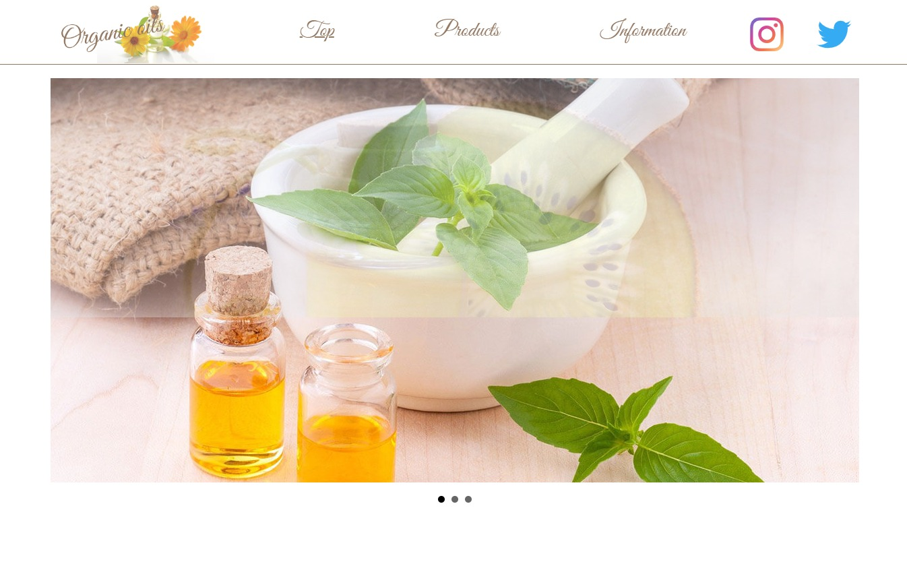
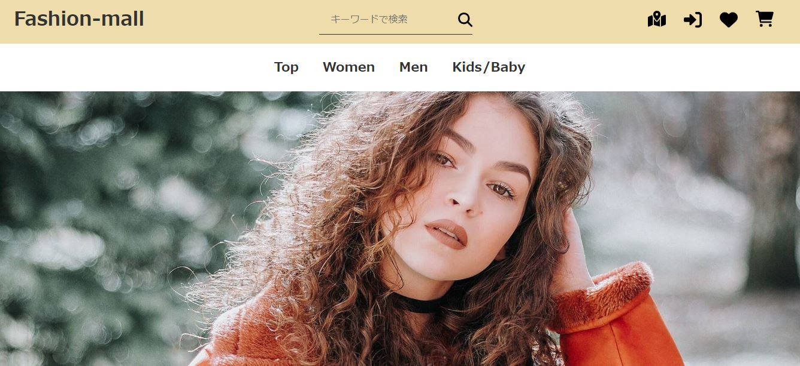
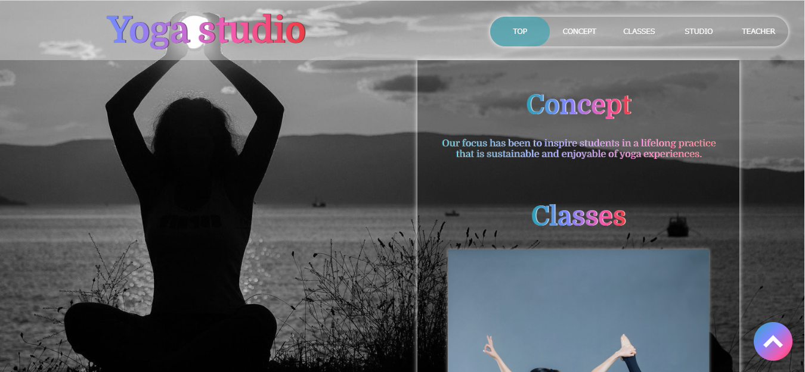
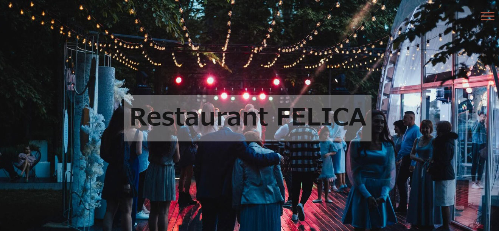

About me
シンプルで裏表のない、超ポジティブな性格です。
とにかく新しいことを学ぶこと、そして働くことが好きです。
これまで様々な職種を経験してきましたが、苦手と感じるような業務はなく多岐にわたる業務をマルチタスクでこなしてきました。
オールラウンダー故に自身のアイデンティティに悩んだり、自分の希望に沿わないポジションチェンジなども経験し、自信をなくした時期もありましたが、今は自信を持って言えます。
私の強みはなんでもできることです。
- GOOD: コーディングや画像加工など集中できる作業
- LIKE: keyframesやjQueryなどを使用したアニメーション
- PROUD: 手相がいい、晴れ女、勘がいい
- INTEREST: 美容、ヨガ、語学(英語・韓国語)、競技麻雀、マンガを読むこと
- 長所: コミュニケーション力、サポート力、環境適応力、洞察力、マルチタスク、集中力
- 短所: 集中しすぎてしまうこと、すぐおなかが空くこと
- 2004
学生時代

幼い頃からの漠然と『手を使った職業に就きたい』と思っており、学生時代は美術部に約7年間所属。
デッサン、水彩画、油絵などを学びました。
美容好きが高じて美容専門学校に進学し、美容師免許を取得。
ヘアセット・メイク・エステ・ネイル・まつげエクステ・着付け・脱毛など幅広く技術習得・従事してきました。
2004 - 2016
美容/アパレル業

専門学校時代から継続して『人を美しくすることでその人の生活/人生をより豊かにする』ということにやりがいを感じていました。
アパレル販売では店長職も経験し、VMD(視覚的商品政策)や導線を考慮した店頭作り・商品陳列と数値分析を週ごとに繰り返し、
PDCAを用いて店舗運営を行うことを学びました。
また、店舗ブログを通して商品のPRやセール告知などの情報発信もしました。
2016 - 2021
事務職
体力面を考慮して事務職に転職し、議事録などのライティング業務、業務効率UPに特化したExcelでの集計フォーマット作りに注力しました。
使用する人のことを考慮して作成することや、すでに組まれているExcel関数から作成者の意図を読み取る技術も身に付きました。
経理/人事総務/営業事務を兼ねることも多く、『痒い所に手が届く』サポート力には自身があります。

2021 - 2022
職業訓練校
デスクワークは楽しめていたものの、クリエイティブ職への興味が強くなり、在職中からHTMLとCSSの勉強を始めました。
退職後、職業訓練校でのWebサイト制作を通して、クリエイティブ職の楽しさを再確認する。
正確さや、論理的な構想力、検証と修正を繰り返しブラッシュアップを継続していく力を身につけることができました。
Future
Web制作

これまで経験した多様な職種と業界の経験を活かして、幅広い作品制作に携わりたいと思っています。
少し遠回りしたかもしれませんが、無駄なものはひとつもなかったと今は自信を持っています。
また、幼い頃から思い描いていた『手を使った職業に就きたい』ということや、ブラッシュアップによって『より美しいものを作っていく』ということは私の夢であり、やりがいでもあると確信しています。
Skills
HTML / CSS / Sass


HTML / CSS: VScodeを使用し、レスポンシブを含めた基本的なコーディングは問題ありません。授業では主にPCファーストでの作品制作を行いました。
@keyframesを使用したアニメーションの設定、CSSのみで作成するハンバーガーメニュー、Accordion-panel、Filteringなど作成もしました。
SASS: @mixinを使用したメディアクエリの設定、@import/@useを使用したパーシャルファイルの読込、コンパイラーの使用などを学びました。
使用したコンパイラー: DartJS Sass Compiler and Sass Watcher, prepros
javaScript / jQuery


javaScript / jQuery: 複雑なコードの記述はまだまだ勉強中ですが、ライブラリ実装やプラグインの使用が可能です。
DOMの操作、西暦等の取得、if文・for文の使用、clcikイベントやscrollイベントの設定など。
Ajaxの読込データを外部ファイル化し、非同期通信する事で必要な物を必要な分だけ必要な時に読み込むSPA（シングル・ページ・アプリケーション）の元となる考え方も学びました。
使用したプラグイン:Bxslider, Lightbox, Fancybox, Paginating, Accordion-panel, Call to action,hamburgers, Particles, AOS 等
WordPress / PHP / MySQL


WordPress / PHP /MySQL: HTMLで作成したサイトのWordPress化を中心に勉強しました。
WordPressの初期設定からオリジナルテーマの作成、固定ページの作成や編集など。
また、Webの最大の強みである"情報を更新できる"ということにフォーカスしながら、カスタムフィールドを使用しました。
問合せフォームの実装では、Google formsと連動させ、get/postを使用したデータ通信や項目入力後の自動返信メールの送信設定までを行いました。
xamppを使用した仮想サーバーの構築、includeを使用したテンプレート化、バーチャルホストの設定およびルートパスの使用なども学びました。データベースはMySQLを使用しました。
Photoshop / Illustrator /
Figma / others


主にバナー作成やワイヤーフレーム・カンプ等の作成時に使用しました。
特にPhotoshopは作成したバナーの大部分に使用しています。
Photoshop:ワイヤーフレーム・カンプ作成、バナー作成、サイト用画像の加工
Illustrator:バナー作成、アイコン・ロゴ作成
Figma:ワイヤーフレーム・カンプ作成


その他、複数人での制作を想定したGITの使用、Github等のサーバーの使用、CODEPENに作品をアップロードするなどしました。
Works
課題制作時に重視した3つのポイント
- 1: とにかく完成させる！
- 2: 授業時間内のみで制作する！
- 3: 内容の取捨選択！
実務を想定し、期日内に制作して完成させることを意識して制作を行いました。
コンテンツ内容やアニメーション、イラストやロゴの作成など、もっとこだわりたい部分がたくさんありましたが、必要なものと不必要なものの選別や優先順位をつけるなど取捨選択を行いました。
-Website-

Organic oils
4ヵ月目制作
職業訓練校でのメインの制作です。
オーガニックオイル販売会社のコーポレートサイトを作成しました。
総制作時間: 20日
レスポンシブ対応: ◎
使用ツール: HTML / SCSS / jQuery / PHP / Photoshop / Figma
- テーマ: オリジナルのサイト制作(疑似クライアントワーク)
- 要件定義、フレームワーク、カンプ制作
- オリジナルロゴの作成
- プラグイン(Bxslider/Paginating)の実装
- お問い合わせフォームの実装（自動返信設定）
- Google mapの埋込

Fashion-mall
6ヵ月目制作
WordPressを使用したアパレルのECサイトです。
総制作時間: 5日
レスポンシブ対応: ◎
使用ツール: WordPress / HTML / CSS / PHP / jQuery / Photoshop
- テーマ: 余白のないレイアウト
- HTMLで作成後、WordPress化
- WordPressのカスタムフィールドの使用
- checkedの使用
- sortを使用したランキング
- accordion-panelを使用したQ&Aの作成

Yoga studio
5ヵ月目制作
ニューヨークのヨガスタジオの英語サイトです。
総制作時間: 3日
レスポンシブ対応: ◎
使用ツール: HTML / SCSS / jQuery / Photoshop
- テーマ: モバイルオンリーサイト制作
- テキストはすべて英語で作成
- ハンバーガーメニューの実装
- メインカラーにグラデーションを使用
- スマートフォンでの閲覧を主軸に、コンテンツを調整
- backdrop-filterの使用

Restaurant FELICA
3ヵ月目制作
貸切利用可能なレストランフェリカのサイトです。
総制作時間: 1日
レスポンシブ対応: ◎
使用ツール: HTML / CSS / JavaScript / jQuery / Ajax / Photoshop
- jQueryを使用したハンバーガーメニューの設置
- プラグイン(Bxslider)の実装
- youtubeの埋込
- Twitterの埋込
- Google formsを利用した問合せフォームの実装
- Ajaxを使用した外部ファイルの読込
- JavaScriptを使用した西暦の取得
- 画像の横スクロールの実装
{kind=link}
{kind=link}
{kind=link}
{kind=link}
{kind=link}
{kind=link}
{kind=link}
{kind=link}
{kind=link}
{kind=link}
{kind=link}
{kind=link}
{kind=link}
{kind=link}
{kind=link}
{kind=link}
-Animation-
text-animation
See the Pen Text animation2(CSS) by mmmccchhh (@mmmccchhh) on CodePen.
accordion-panelを使用したQ&A
See the Pen Accordion-panel(CSS) by mmmccchhh (@mmmccchhh) on CodePen.
Illustratorとiconを使用したanimation
See the Pen Motion path(CSS) by mmmccchhh (@mmmccchhh) on CodePen.
text-gradientを使用したボタン
See the Pen button by mmmccchhh (@mmmccchhh) on CodePen.